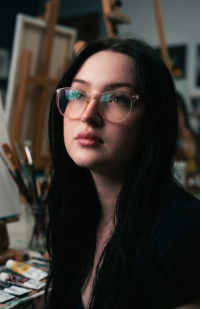

About Me
Strategy. Design.
Content. Meaning.
I'm Kristen, a Digital Communications Coordinator based in Temple, TX. On any given week you'll find me writing content strategy, designing newspaper layouts, editing hundreds of photos, maintaining websites, producing video, and coding email newsletters. You name it, and it's done!
My degree is in psychology, which was far from a detour. Understanding how people process information and what makes them stop and pay attention shapes everything from a caption to a page layout to a site redesign. My portfolio is hand-coded in HTML and CSS, which says more than a resume line ever could.
Social & Strategy
Design & Print
Web & Code
Video & Content
In Action

Receiving the Member Appreciation Award from the Lone Star Street Rod Association Texas Director at the 2026 Car Show

With AFA CEO Allison Koppel at the 2025 American Fraternal Alliance Symposium in Cleveland, OH

Packing care packages at the AFA Symposium service project — Cleveland, OH 2025

Team photo on stage at the 2025 American Fraternal Alliance Symposium

Dressed as Shadowheart (Baldur's Gate 3) at the 2025 SPJST Halloween Party — won an award for it!

On the SPJST float at the 2025 Belton 4th of July Parade with Miss SPJST and my husky Cosmo (collecting shelter donations!)

In front of historic Pavilion Hall at the Czech Heritage Center — after working my first TOCA Reception & Dinner (2025)

Team selfie on Day 2 of the 2026 SPJST Car Show